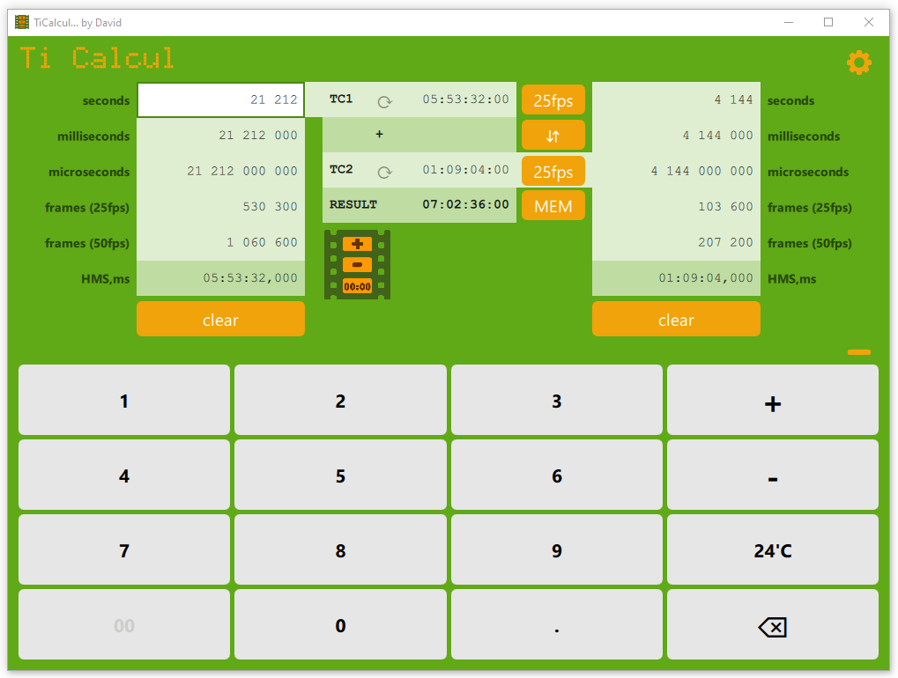

Timecode Calculator
The ultimate timecode Calculator. More...
Classes
La classe Afficheur gère un champ numérique de l'IHM QML | |
La classe Calculateur gère les opérations entre les opérandes: addition, soustraction, complément | |
La classe Converter propose des fonctions de conversion de timecodes | |
Enumérés des différentes unités gérées par l'application |
Detailed Description
TiCalcul convertit, additionne et soustrait des timecodes, en particulier en millisecondes et en images, ce qui est spécialement utile dans les métiers de la vidéo.
Logiciel gratuit et sans publicité.
TiCalcul est developpé en C++ et en QML (avec le framework Qt version 6). Cette documentation décrit les classes C++ et les les types QML.
